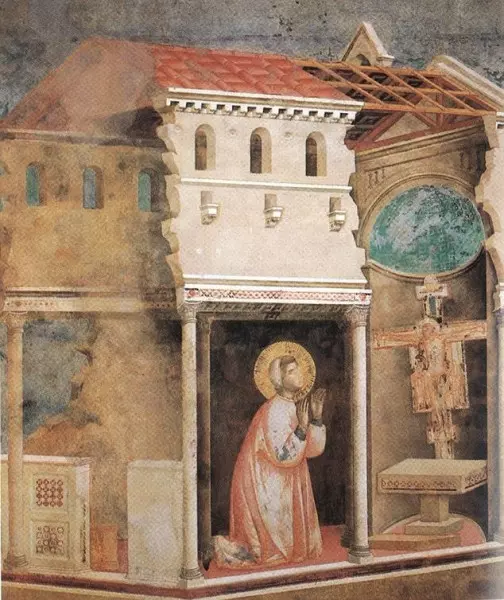
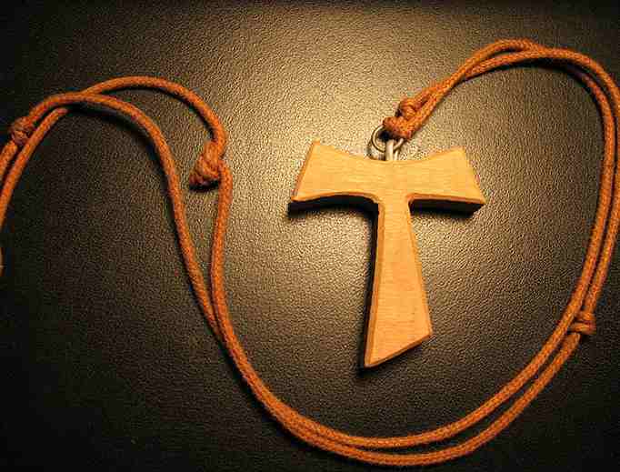
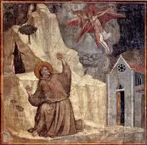
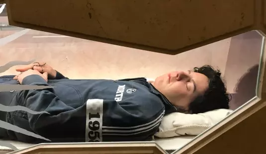
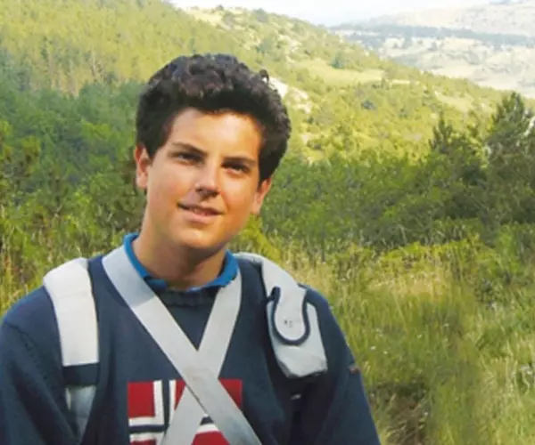
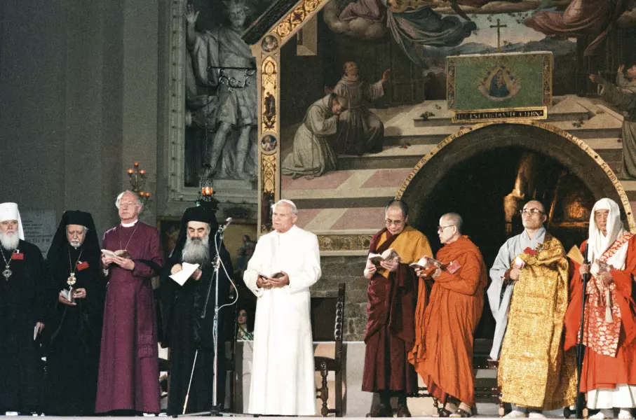
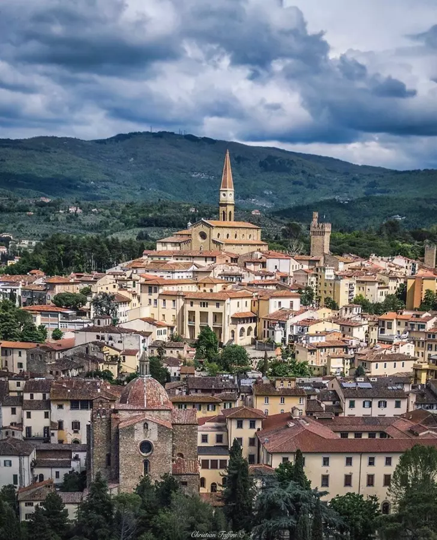
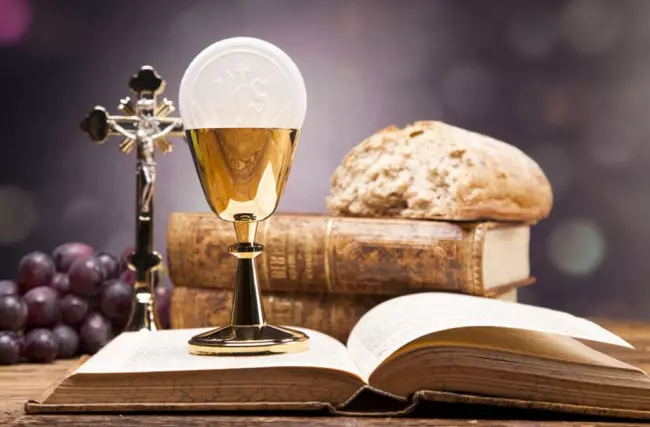

Élete
De ki volt ez az ember?
Röviden: Október 4-e szentje: Assisi Szent Ferenc. Minden idők egyik “legnépszerűbb” szentje, már életében legendák születtek róla, alakja számos képzőművészt, zeneszerzőt, írót, filmrendezőt ihletett meg. XVI. Benedek pápa az „életszentség óriásának” nevezte.
Kicsit bővebben kifejtve: Ferenc az 1180-as évek elején született Assisiben. Olyan családból származott, amelynek érdeklődése középpontjában az anyagi jólét és gyarapodás állt. Atyja, Pietro Bernardone posztókereskedő Assisi leggazdagabb embere volt. Franciaország iránti szeretetéből becézte kisfiát - akit Jánosnak kereszteltek - Francescónak, vagyis kis franciának. Bernardone nem törődött azzal, hogy Ferenc iskolába járjon, latinul és franciául ezért csak hibásan tudott beszélni, és írni is nehezen tudott, ami élete végéig nagyon bántotta. Innen érthető, hogy tékozlóan bánt a pénzzel, és barátai körében szórta aranyait. Vakmerően nagylelkű volt. Így amikor Rómában járt, és megfigyelte, hogy a zarándokok csak rézgarasokat dobnak az Apostolfejedelmek sírjához, fogta és egész erszényét odaborította.
Ferencet egy betegség döbbentette rá arra, hogy mennyire léha életet élt addig, ez készítette elő megtérését. A húszéves Ferenc egy hadjárat során megsebesült, s foglyul ejtették. Szabadulása után visszatért szülővárosába, és fokozatosan felhagyott a nagyvilági élettel. Megtérése meghatározó mozzanata volt találkozása egy leprással, valamint a San Damiano-templomban átélt misztikus élménye, amikor Krisztus háromszor így szólt hozzá a keresztről: „Ferenc, menj, és javítsd meg omladozó házamat!”
Rómába zarándokolt, belső sugallatokhoz kezdett igazodni. Így egy szép napon ruhát cserélt Rómában egy koldussal, és odaült a Szent Péter-bazilika kapujához kéregetni. De másnap már ismét úgy jelent meg a templomban, mint a dúsgazdag Bernardone fia.
Egy nap Ferenc minden búcsúzás nélkül, egy lóval és egy vég posztóval eltűnt otthonról. Az apa haraggal futott utána, megragadta, és bevonszolta a házba, megpofozta, majd bezárta a pincébe. Ezután egy másik városba ment, s mikor napok múlva hazatért látta, hogy Pica asszony és a cselédek kiszabadították és futni hagyták a fiút. A püspökhöz fordult. Ferenc ruha nélkül állt ott, mert a püspök lába elé letette atyjától kapott ruháját, erszényét. A püspök a palástjával takarta be Ferencet.
Ferenc ezután elhagyta a világi életét, hogy egyedül Istennek szolgáljon. Ez eleinte abból állt, hogy helyreállította a környék összedűlőfélben lévő templomait és kápolnáit. Felcsapott vásári énekesnek, s amikor az emberek köréje gyűltek, építőkövet koldult tőlük.
Ferenc a Porciunkula-kápolnában hallgatta az evangéliumot, mely arról szólt, hogy Jézus elküldte a Tizenkettőt, és meghatározta életformájukat: ne vigyenek magukkal sem pénzt, sem tarisznyát; ne legyen két ruhájuk, se sarujuk, még botjuk sem (Lk 9,3-5). Úgy érezte, hogy ez személy szerint neki szól, és felkiáltott: „Ez az, amit keresek!” - majd azonnal szó szerint elkezdte megvalósítani a hallottakat: mezítláb, kötéllel a derekán, szürkésbarna ,,ruhában'' vándorolt a vidéken, prédikált, gyógyított, halottat támasztott fel és ördögöket űzött.
Az „assisi bűnbánók'' végtelen türelme hamarosan felkeltette az emberek figyelmét. Azt látták ugyanis, hogy soha egyetlen fillért nem fogadnak el, vidámak, és egymással szemben nagyon figyelmesek a szeretetben. Ez mindenkit megragadott. Voltak olyanok, akik megdöbbentő, nyilvános bűnvallomást tettek, majd elajándékozták a vagyonukat és csatlakoztak Ferenchez. A testvérek száma bámulatos gyorsasággal gyarapodott: Néhány év múlva a pünkösdi káptalanra már ötezer testvér gyűlt össze.
A bíboros elvitte őt III. Ince pápához, és ezekkel a szavakkal mutatta be: „Úgy hiszem, ő az, aki által az Úr az Egyház hitét az egész világon meg akarja újítani.” A pápa barátságosan fogadta a testvéreket, de úgy vélte: „Túlságosan szigorúnak és keménynek látszik az életetek.” Ferenc azonban oly lángoló buzgósággal képviselte az ügyet, hogy az egyik bíboros ilyen nyilatkozatra fakadt: „Ez az ember csak azt akarja hogy engedjük az evangélium szerint élni!”. Akkor III. Ince átölelte Ferencet, megáldotta őt társaival együtt és engedélyt adott nekik a prédikálásra. Ferenc pedig tiszteletet és engedelmességet fogadott a pápának, és valamennyien felvették a tonzúrát.
Ferenc így beszélt: „Először az egyházfőket akarom megújítani alázatosságban és istenfélelemben''. A szegénységet Ferenc annyira fontosnak tartotta, hogy úgy tekintette, mint „Krisztus menyasszonyát''. figyelmeztette testvéreit, hogy „semmiképpen ne fogadjanak el pénzt'' és „ne legyen tulajdonuk, hanem mint zarándokok és idegenek, akik ebben a világban szegényen és alázatosan szolgálják az Urat, járjanak alamizsna után, és ne szégyelljék magukat, hiszen az Úr maga is szegénnyé lett értünk''. „És a testvérek dolgoztak is mint cselédek, kézművesek, betegápolók a leprások házaiban, vagy parasztoknak segítettek a mezei munkában.”
A ferences rend, egy római katolikus szerzetesrend, koldulórend melyet Assisi Szent Ferenc alapított 1209-ben. Ferenc durva csuhában és mezítláb, elkezdett a megtérésről prédikálni. Hamarosan többen csatlakoztak hozzá. Első 12 követőjével járták Itáliát és prédikáltak. Az új rend, amely szigorú szabályai folytán nagy hatással volt a kor szellemére, óriási arányokban terjedt. A rend női ágát a klarisszákat, Szt. Klára, egy Assisi-beli nemes lány alapította Szt. Ferenc segítségével. Magyarországon körülbelül 1224-ben jelent meg, első kolostoruk Esztergomban volt. 1335-ben a rendtagok száma elérte a 35 ezret, 1937-ben 25,5 ezer tag volt része a rendnek, majd ez a szám folyamatosan csökkent és 2014-ben már csak 13,5 ezer ember tartozott a ferences rendhez.
Teológiát soha nem tanult, ezért nem a tudós fölényével beszélt, hanem a szívéből áradt a szó. Beszédeivel téríteni akart: „Bándd meg a bűneidet, add vissza az idegen javakat, és engesztelődj meg felebarátaiddal!''
Ferenc irtózott a hangos nevetéstől és a hiábavaló beszédtől. Ezzel szemben a források gyakran beszélnek arról, hogy sírt. A szíve mélyéig ható fájdalom fogta el, valahányszor Krisztus szenvedéséről elmélkedett. Közben pedig kegyetlen ördögi támadások is kínozták.
Átkot mondott egy vörösbegyre, mikor az megette a gyengébb madarak elől a szemet, és nem kedvelte a hangyákat, mert azok maguknak gyűjtenek. Különösen azokat a teremtményeket szerette, amelyekben Isten vagy a ferences rend képmását látta, például a búbospacsirtát, a bárányt vagy a Napot. Baráti módon tudott szólni az állatokhoz, mintha az egész teremtés paradicsomi állapotából mutatott volna meg valamit.
Mivel Ferenc tekintélyét mindenki elismerte, békét tudott közvetíteni a sokféle háborútól gyötört világban. Annyira szerette a szegénységet mind magában, mind másban, hogy azt mindig úrnőjének nevezte, s amikor egy nálánál is szegényebbet látott, nyomban féltékenység támadt szívében, mert attól félt, hogy mások legyőzik.
Halála előtt Ferenc megáldotta testvéreit, felolvastatta Jézus búcsúbeszédét és még egyszer átnyújtott a jelenlévőknek egy-egy falat kenyeret. Ezután megkérte őket, hogy vetkőztessék le és fektessék le a puszta földre – azt akarta, hogy a végső szegénység legyen a halotti ruhája. A halált „Isten hozott, Halál testvér!” felkiáltással fogadta, és énekelve adta vissza lelkét az Úrnak 1226. október 3-án a Porciunkulában.
Szent Ferenc aktualitása és példakép a mindennapokban: Jorge Mario Bergoglio vagyis Ferenc pápa, pápaként a Ferenc nevet vette fel Assisi Szent Ferenc tiszteletére – nyilatkozata szerint azért, mert olyan egyházat szeretne, amely kiáll a szegények, a béke és a teremtett világ védelmében.
Forrás linkImádság Assisi Szent FerenchezNaphimnusz
Felséges Úr, mindenható s jó mindenek felett! Tied a dicsőség, dicséret, áldás és minden tisztelet! Minden Téged illet, Felség, egyedül s nincs ember, aki Téged méltón emleget.
Dicsérjen s áldjon, én Uram kezednek minden alkotása, különösen bátyánk-urunk, a Nap, ki nappalt ád, világít és minket megvidámít. Fényes ő és ékes ő és sugárzó roppant ragyogása felséges arcod képmása.
Áldjon, én Uram, asszony-nénénk, a Hold és minden csillagok, kiket az égre szórtál és szépek most és kedvesek és csillogók. Áldjon, én Uram, a mi öcsénk, a Szél, az Ég s a Lég s a Hó s a Hő s a derűs és borús idő, kik által éltetsz mindent, ami él. Áldjon, én Uram, húgunk, a Víz, oly tiszta, hasznos, jóleső, alázatos és kedves ő.
Áldjon, Uram, mi Földanya-nénénk, ki tart és táplál minket, hogy megélnénk, ki füvet hajt és gyümölcsöt terem és sok színes virággal élénk.
Áldjon, én Uram, minden ember, kit háborúság, baj, gyötrelem ért, de tűr és megbocsát szerelmedért. Boldogok, kik mindent békén viselnek, Te nyújtasz nekik, Felség, egykoron babért.
Áldjon, én Uram, mi nővérünk, a testi Halál, ki minden élő embert megtalál. Akik halálos bűnben halnak meg, jaj azoknak, boldogok, akik szentséges akaratodhoz igazodnak, nem tesz kárt bennük második halál.
Dicsérjétek s áldjátok az Urat, s adjatok hálát Neki, s roppant alázattal szolgáljatok Neki!
Istenünk, te megadtad Assisi Szent Ferencnek, hogy a szegénységben és alázatosságban Krisztushoz váljék hasonlóvá. Tégy készségessé minket, hogy mi is az ő útján járva kövessük Fiadat, és örvendező szívvel veled egyesüljünk! A mi Urunk, Jézus Krisztus, a te Fiad által, aki veled él és uralkodik a Szentlélekkel egységbe, Isten mindörökkön örökké. Ámen.
Carlo Acutis-val való kapcsolata
Szüleimnek hála többször is eljuthattam Assisibe, nagyon szerettem ezt a várost. Ha ide látogattam mindig elidőztem a Verna-hegyen, tűnődve Szent Ferenc személyén és életének üzenetén, amely a mának is szól. Többször vett itt részt lelkigyakorlatokon, a szentgyónásai után pedig szívesen fürkészte a lenyűgöző táj dombjait. Elmélkedései során sokat gondolkodott Szent Ferencről, például a stigmáiról.
Carlo nagyon sokat tudott Szent ferenc és rendtársai életéről, sokat olvasott és kérdezősködött utánuk. Nagyon jól ismerte Assisi-t - ezért is ő az útikalauzunk itt, többek között tudta, hogy Szent Ferenc tanítványaival sokat imádkozott a Subasio hegyi kolostorban. Több évszázaddal később ő maga is gyakran elmélkedett és imádkozott ott.
“ “Assisi az a hely, ahol a legboldogabbnak érzem magam!” - mondta Carlo. Csodálta Szent Ferencet a szegénysége és a természet iránti szeretete miatt. “ - részlet a Boldog Carlo Acutis: 15 év barátság Istennel c. könyvből.
Később Assisi városában is temették el a boldog fiú testét. Carlo is nagyon szerette az állatokat, sokat foglalkozott velük, ezért is tisztelte nagyon szent Ferencet, számára is fontos volt a természet- és teremtésvédelem. Assisiben, ahol a nyári hónapokat töltötte, megismerkedett két fiúval, akikkel szoros barátságot kötött: Mattia és Jacopo. Velük együtt járt sokat oratóriumba és uszodába. Számukra is igyekezett átadni a természet és állatok szeretetét. Carlonak négy kutyája és két macskája volt, akiket felelősségteljesen gondozott és nevelt. Rengeteg szórakoztató kisfilmet készített kedvenceiről.
Carlo fiatal kora ellenére gondolataiban sokat foglalkozott Szent Ferenc életével, csodáival és elsőre nehezen felfogható döntéseivel.
Carlot Assisiben, a Santa Maria Maggiore templom Szent Ferenc ruháinak levetéséről elnevezett szentélyébe. helyezték végső nyugalomba, kívánsága szerint, bár az ő kérése az volt, hogy a puszta földbe temessék.
Néhány történet Boldog Carlo Acutis Assisiben szerzett élményeiről, Boldog Carlo Acutis: 15 év barátság Istennel c. könyvből idézve:
Carlo a nyári szünetben is minden egyes nap elment templomba, és szentáldozáshoz járult. Egy ismerőse így emlékszik vissza: „Tanúsíthatom, hogy Carlo nagyon gyakran járt szentségimádásra. Többször is volt alkalmam elkísérni őt Assisibe a Verna-hegyre és Santa Margherita Liguréba, ahol az apai nagyszüleit látogatta meg, ahol a vakáció egy részét ott töltötték a nyaralójukban.
Luana mama mondta, hogy amikor Carlo Assisiben meglátott egy földön alvó koldust az egyik parkban, azután minden este figyelmeztetett, hogy csomagoljunk annak a szegény embernek is valamit. Az étel mellé mindig tett egy eurót is a zsebpénzéből, hogy amikor a koldus felébred, ott találja maga mellett.
Carlo telt testalkatú gyermek volt, ő is szerette túlzásba vinni az evést, ezért már gyermekkora óta kérte Szent Ferencet, hogy segítsen neki a mértéktartásban, amely sikerült is.
Carlo lelkesen követte a vallások közötti találkozókat. Érdeklődött a 2002-ben, II. János Pál pápa által elnökölt Assisi-találkozó iránt is. Szívében mindig ott volt az Evangélium terjesztésének a vágya.
2019. április 6: Több száz fiatal sorakozik az Assisi Szent Ferenc-bazilika alsó templománál, hogy imádkozhassanak a „digitális világ szentje” mellett, ahogy Ferenc pápa mondta róla.
Az Assisiben tartott ökumenikus találkozó, melyet Carlo nagy érdeklődéssel figyelt, középen II. János Pál pápa.
Csodái
A legenda szerint III. Ince pápa álmot látott: látta, hogy a lateráni bazilika összedőlni készül, de egy jelentéktelen kis szerzetes a templom mellé áll, s miközben ő maga egyre nagyobb lesz, a vállával megtámasztja az épületet. Néhány nappal később megjelent Ferenc társaival a pápa előtt. Ekkor hangzott el a felismerés: „Valóban ez az a szerzetes, aki Isten egyházát megtámasztotta, és megmentette a pusztulástól!”
Egy testvérnek, akit igen kedvelt, a Szentlélek sugallatára ezt a titkot fedte fel: „Él ma a földön Istennek egy szolgája, aki miatt, amíg csak él, az Úr nem engedi, hogy éhínség dühöngjön az emberek között.” Ez így is történt. De Ferenc halála után rögtön megváltozott a helyzet, boldogságos halála után ugyanis megjelent ennek a testvérnek, mondván: „Íme, már itt van az éhínség, amit életemben az Úr nem engedett a földre.”
Amikor Arezzo városához érkezett, ahol belviszály tört ki, Isten embere látta a város széléről, hogy a hely fölött ördögök viháncolnak. Magához hívta társát, Szilvesztert, s így szólt hozzá: „Menj a város kapujához, és a Mindenható Isten nevében parancsold meg az ördögöknek, hogy takarodjanak onnan!” Az a kapu elé sietve harsányan kiáltott: „Isten nevében, és atyánk, Ferenc parancsára távozzatok mind, ti ördögök!” Kisvártatva valamennyi polgár megbékélt.
Látomásában Isten szolgája egy megfeszített szeráfot pillantott meg maga fölött, aki keresztre feszítésének jeleivel láthatóan megpecsételte, úgyhogy maga is megfeszítettnek látszott. Keze, lába és oldala a kereszt jegyét viselte, de gondosan ügyelt arra, hogy ezeket a stigmákat mindenki szeme elől elrejtse. Néhányan még életében észrevették ezeket, halálakor pedig igen sokan megpillanthatták. Sok csoda igazolta, hogy ezek a jelek valóban léteztek.
Apuliában egy Rogerus nevű férfi Szent Ferenc képmása előtt állva azon töprengett, vajon igaz-e, hogy ilyen csodával tündökölt, vagy csak kegyes csalás volt-e, avagy társai törekedtek ennek elhitetésére. Míg ezt forgatta fejében, hirtelen olyan hangot hallott, amilyet a számszeríjból kilőtt nyíl ad, és érezte, hogy bal kezén súlyosan megsebesült, de mert kesztyűjén a sérülésnek semmi nyoma nem látszott, lehúzta a kezéről, és a tenyerén súlyos sebet pillantott meg, amilyet a nyílhegy üt. Akkora erővel áradt a sebből a forróság, hogy úgy tűnt, belepusztul a kínba és a forróságba. De mikor bűnbánatot tartott, és szívből megvallotta, hogy hisz Szent Ferenc sebeiben, két nap múlva, amikor Isten szentjéhez annak sebeire könyörgött, nyomban meggyógyult.
Mikor a fecskék beszéde közben csiviteltek, rájuk parancsolt, és tüstént elhallgattak. Portiunculánál, cellája mellett gyakran ciripelt a füge fán lakó tücsök. Isten embere, kezét kitárva, így hívta őt: „Tücsök nővérem, gyere hozzám!” Mire az nyomban engedelmeskedett, és kezére ugrott. Ferenc pedig: „Énekelj, tücsök nővérem, és dicsérd az Uradat!” A tücsök tovább ciripelt, és csak Ferenc engedelmével távozott.
Szent Orbán remeteségében Isten szolgája igen súlyos betegséggel küszködött, s mikor maga is úgy érezte, minden ereje elhagyja, egy pohár bort kért, de mivel más nem volt, vizet vittek neki. Mikor ezt Ferenc a kereszt jelével megáldotta, az rögtön a legjobb borrá változott. Amit az elhagyatott hely szegénysége nem tudott nyújtani, a szent férfiú tisztasága elérte. Az első korty bor után nyomban visszanyerte erejét.
Mikor az egyik testvér valamit vétett az engedelmesség törvénye ellen, de jelét adta bűnbánatának, Isten embere, hogy a többieket megijessze, csuháját a tűzbe vetette. Mikor ez már egy ideje a tűzben volt, megparancsolta, hogy vegyék ki, és adják vissza a testvérnek. Kiveszik tehát a csuhát a lángok közül, úgy, hogy az égésnek legkisebb nyoma sincs rajta.
Mikor egy csapat madárral találkozott, mintha értelmes lények lettek volna, e szavakkal köszöntötte őket: „Madár testvéreim, igencsak dicsérnetek kell Teremtőtöket, aki tollakba öltöztetett benneteket, szárnyakat adott, hogy repülhessetek, nektek adta a tiszta levegőeget, és gondoskodik rólatok, hogy semmiben hiányt ne szenvedjetek.” A madarak feléje nyújtogatták nyakukat, kiterjesztették szárnyaikat, kitátották csőrüket, és feszülten figyeltek rá. Ő pedig átmenve közöttük, csuhájával meg-megérintette őket, de egyik sem mozdult el a helyéről, míg csak engedélyt nem adott rá, majd egyszerre elrepültek.
Egy alkalommal Isten embere Apulián ment keresztül, s egy jókora, pénztől dagadó erszényt talált az úton. Társa ezt látva fel akarta venni, hogy a szegények között szétossza, de ő semmi áron nem engedte, mondván: „Fiam, nem szabad a másét elvenni!” De mikor az hajthatatlan maradt, Ferenc egy keveset imádkozva fölvétette vele az erszényt, mely addigra pénz helyett egy kígyóval lett tele. A testvért ennek láttán félelem fogta el, de az utasításnak engedelmeskedni akart, kezébe veszi az erszényt, mire a hatalmas kígyó előmászott belőle. Így szólt erre a szent: „A pénz Isten szolgáinak ördög és mérges kígyó.”
Már életében sok csodával tündökölt, így például azok a kenyerek, melyeket hozzá vittek áldásra, sok betegnek hozták meg a gyógyulást. A vizet borrá változtatta, és egy beteg, aki azt megkóstolta, nyomban visszanyerte az egészségét.
Mikor egy úrnő, aki Szent Ferenc odaadó híve volt, minden élők útjára lépett (Józs 23,14), a papok és egyháziak pedig eljöttek ravatalához megadni neki a végtisztességet, hirtelen fölegyenesedik a ravatalon, és a körülötte álló papok közül magához hív egyet, mondván: „Gyónni akarok, atyám, mert halott voltam, és szörnyű tömlöcre szántak engem, mivel egy vétkemet, amit most feltárok neked, eddig még nem gyóntam meg. De mert Szent Ferenc imádkozott érettem, engedélyt kaptam, hogy visszatérjek testembe, s hogy ennek a bűnnek a felfedésével bűnbocsánatot nyerjek. Majd miután ezt feltártam előttetek, szemetek láttára békében elnyugszom.” Meggyónt és feloldozást nyert, s elaludt az Úrban
Egy katona megvetette Szent Ferenc csodáit és tetteit, s mikor egy alkalommal kockázott, őrült hitetlenséggel telten így szólt a körülállókhoz: „Ha Ferenc szent, mutassanak a kockák tizennyolcat.” Ezután háromszor hatot dobott, és egészen a kilencedik alkalomig, minden egyes dobásával háromszor hatot ért el. De őrültségét őrültséggel tetézve így szólt: „Ha igaz, hogy ez a Ferenc szent, úgy ma kardtól vesszen el testem, ha pedig nem szent, maradjak sértetlen.” A játék befejeztével, hogy bűnös kérése beteljesedjék, megsértette unokaöccsét, mire az kardot rántott, keresztül döfte nagybátyját, és azon nyomban megölte.
Egy ember, aki elvesztette fél lábát, úgyhogy mozdulni sem tudott, e szavakkal fohászkodott Szent Ferenchez: „Segíts rajtam, Szent Ferenc, emlékezzél odaadásomra és a szolgálatra, amelyet neked tettem, amikor szamaram hátán vittelek, szent lábadat és kezedet csókoltam, mert íme most haldoklom szörnyű fájdalomtól gyötörve.” Ekkor Ferenc megjelenvén előtte, egy kicsiny, tau alakú pálcával megérintette a fájdalom helyét, és a kelevényt felfakasztva visszaadta egészségét, de a tau jel ott maradt azon a helyen. Ezzel a jellel szokta Szent Ferenc leveleit aláírni.
Róma városában egy kisfiú kiesett a palota ablakából, és nyomban kilehelte lelkét. Szent Ferenchez fohászkodnak, mire azonnal életre kel.
Forrás link